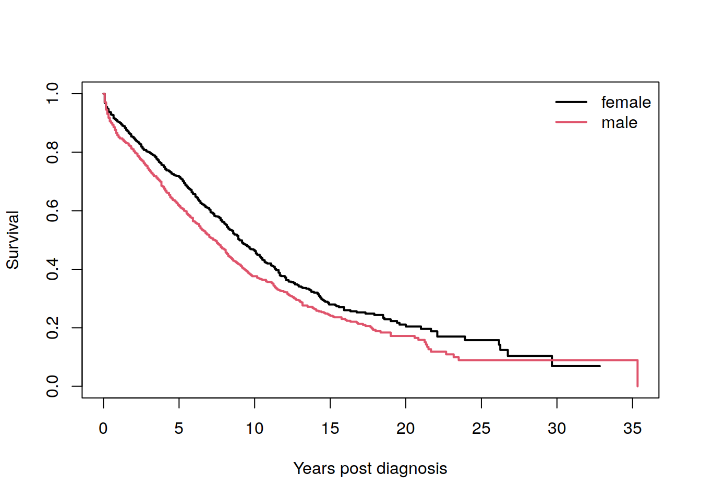
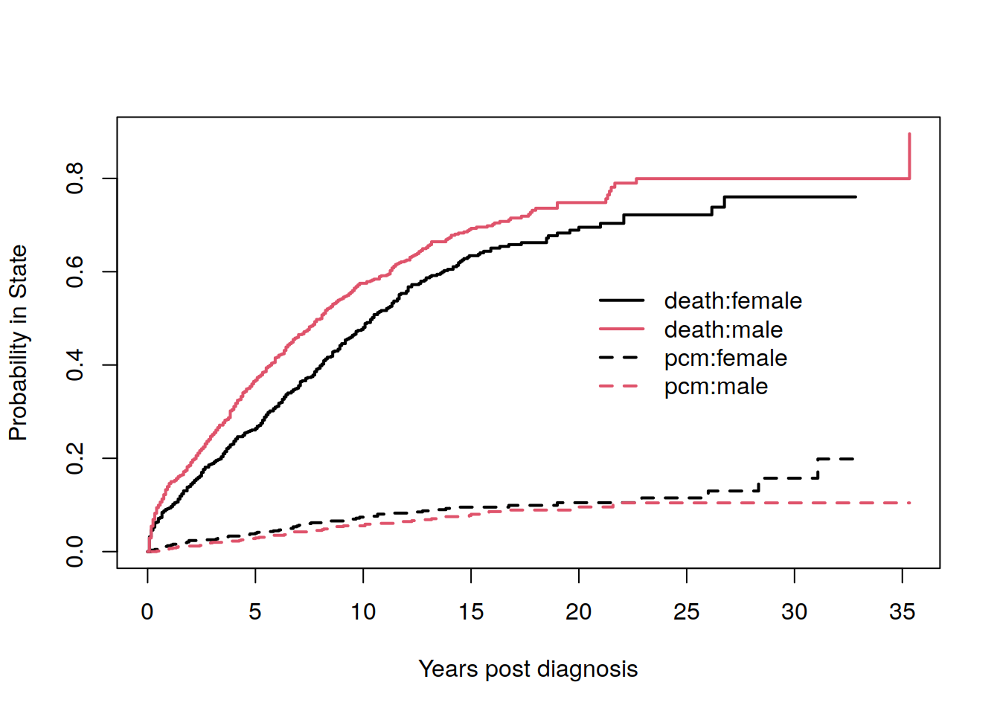
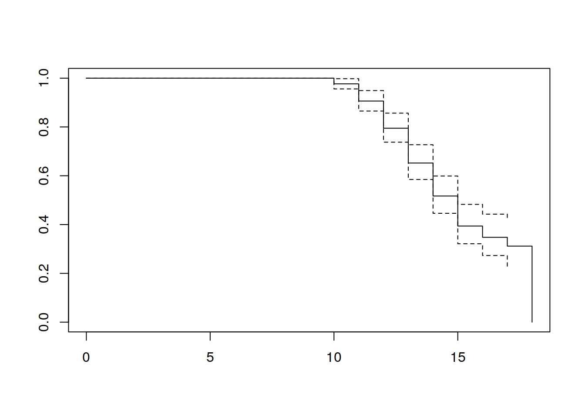
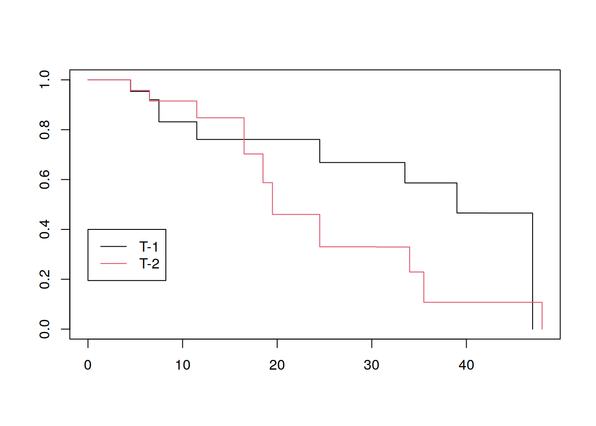

2 Estimación No-Paramétrica
Con el fin de realizar estimación (no paramétrica) de las funciones de sobrevivencia, vamos a considerar primero un esquema de observaciones truncadas por la izquierda y censuradas por la derecha. Además, vamos a asumir que el tiempo de censura no está relacionado con el tiempo del evento (independencia observaciones-censuras).
Sea \(t_1<t_2<\cdots <t_D\), \(D\) distintos tiempos de ocurrencia del evento de riesgo. Además asuma que en tiempo \(t_i\) ocurrieron \(d_i\) eventos, para \(1=1,\ldots,D\). Sea \(Y_i\) el número de individuos en riesgo al momento \(t_i\). Estos \(Y_i\) individuos sobrevivirán al riesgo o bien tendrán el riesgo en momento \(t_i\) (\(d_i\)).
Por lo tanto, un estimador de la probabilidad de experimentar el evento en momento \(t_i\), dado que no se ha experimentado el riesgo hasta antes de \(t_i\) es:
\[\frac{d_i}{Y_i}\]
El estimador estándar de \(S(t)\) es el estimador de Kaplan-Meier. Si \(t\leq t_{\text{max}}\):
\[\begin{align*} \hat S(t)= \begin{cases} 1 & \text{si $\quad t<t_1$}\\ \prod_{t_i\leq t}\left[1-\frac{d_i}{Y_i}\right] & \text{si $\quad t_1\leq t$}. \end{cases} \end{align*}\]la cual es una función escalonada con respecto a \(t\). La varianza de \(\hat S(t)\) puede ser estimada a través de la fórmula de Greenwood:
\[\hat V[\hat S(t)]=\hat S(t)^2\sum_{t_i\leq t}\frac{d_i}{Y_i(Y_i-d_i)}.\]
Por otro lado la función acumulativa de riesgo puede ser estimada (plug-in):
\[\hat H(t)=-\log[\hat S(t)].\]
Una alternativa al estimador anterior es el estimador de Nelson-Aalen (Nelson-Altschuler):
\[\begin{align*} \hat H(t)= \begin{cases} 0 & \text{si $\quad t<t_1$}\\ \sum_{t_i\leq t}\frac{d_i}{Y_i} & \text{si $\quad t_1\leq t$}. \end{cases} \end{align*}\]con varianza:
\[\sigma_H^2(t)=\sum_{t_i\leq t}\frac{d_i}{Y_i^2}\]
y usando el estimador anterior, podemos estimar la función de sobrevivencia con:
\[\hat S(t)=\exp[-\hat H(t)]\]
Dos principales usos del estimador de Nelson-Aalen:
1- Permite definir una herramienta descriptiva que se usa como método de selección de modelos. Por ejemplo, en el caso exponencial, se sabe que \(h\) es constante, es decir \(H(t)\) es lineal con respecto a \(t\):
permite identificar un modelo exponencial sobre otras alternativas.
2- El estimador de Nelson-Aalen permite obtener estimadores crudos de \(h\).
Nota: ¿Qué pasa si \(t>t_{\text{max}}\)? (extrapolación). Soluciones:
- \(\hat S(t)=0\): el sobreviviente con el tiempo en estudio más grande muere inmediatamente.
- \(\hat S(t)=\hat S(t_{\text{max}})\): el mismo individuo nunca muere.
- Completar \(\hat S(t)\) con una exponencial que arranca con \(\hat S(t_{\text{max}})\):
\[\hat S(t)=\exp[t\log[\hat S(t_{\text{max}})]/t_{\text{max}}]\]
Ejercicio: Si no hay censura, el estimador de Kaplan-Meier es la función de sobrevivencia empírica.
2.1 Intervalos de confianza puntuales de \(S(t)\)
Sea \(\sigma_S(t)^2=\frac{\hat V[\hat S(t)]}{\hat S(t)^2}\). Si \(t_0\) es un punto fijo de tiempo, definimos el intervalo de confianza lineal al \(100\cdot (1-\alpha)\)% para \(S(t_0)\) como:
\[\hat S(t_0)\pm z_{1-\alpha/2}\sigma_S(t_0)\hat S(t_0)\]
Con el fin de mejorar el intervalo de confianza anterior, se puede considerar un intervalo de confianza sobre el logaritmo de \(H(t)\):
\[\log \hat H(t_0)\pm z_{1-\alpha/2}\cdot \sigma^*(t_0)\]
donde \(\sigma^*(t_0)\) lo tenemos que calcular o bien aproximar. Como \(\text{Var}(\hat S(t))\approx \hat S(t)^2\sigma_S(t)^2\) entonces por el método delta (Ejercicio):
\[\begin{align*} \text{Var}[\log H(t_0)]&=\text{Var}[\log(-\log S(t_0))]\\ &\approx \frac{1}{[\log \hat S(t_0)]^2}\underbrace{\sum_{t_i\leq t}\frac{d_i}{Y_i(Y_i-d_i)}}_{\sigma_S(t_0)^2} \end{align*}\]entonces podemos aproximar el término \(\sigma^*(t_0)\) y obtener:
\[\log \hat H(t_0)\pm z_{1-\alpha/2}\cdot \frac{1}{\log S(t_0)}\sigma_S(t_0)\]
es un intervalo de confianza al \(100(1-\alpha)\)’% para \(\log[-\log S(t_0)]\). Entonces:
\[\hat H(t_0)\exp\left[\pm\frac{z_{1-\alpha/2}\sigma_S(t_0)}{\log S(t_0)}\right]\]
es un IC para \(H(t_0)\) y \([\hat S(t_0)^{1/\theta},\hat S(t_0)^\theta]\) donde \(\theta=\exp\left[\frac{z_{1-\alpha/2}\sigma_S(t_0)}{\log \hat S(t_0)}\right]\) es el IC al \(100(1-\alpha)\)% para \(S(t_0)\).
Otra posibilidad es utilizar la transformación \(\text{arcsen}[\hat S(t_0)^{1/2}]\)
Ventaja: ambas posibilidades permiten que el IC de \(S(t_0)\) no salga del intervalo \([0,1]\).
Por otro lado, para muestras pequeñas, el IC con la transformación arcsen es más conservador, seguido del IC con transformación log-log y de último el lineal (sin transformación).
Nota: los intervalos log-log y arcsen no son simétricos.
2.2 Bandas de confianza para \(S(t)\)
Queremos encontrar dos funciones aleatorias \(L(t)\) y \(U(t)\) tal que:
\[P[L(t)\leq S(t)\leq U(t)\quad \forall t: t_L\leq t\leq t_U]=1-\alpha\]
A \([L(t),U(t)]\) le llamamos banda de confianza al \(100(1-\alpha)\)% para \(S(t)\).
Nair(1984) define el concepto de Bandas EP, las cuales son proporcionales a los intervalos puntuales. Sean \(t_L<t_U\) tal que \(t_L\geq \text{tiempo más pequeño del evento observado}\) y \(t_U\leq \text{tiempo más grande del evento observado}\). Si \(n\) es el tamaño de muestra, defina:
\[a_L=\frac{n\sigma_S(t_L)^2}{1+n\sigma_S(t_L)^2},\qquad a_U=\frac{n\sigma_S(t_U)^2}{1+n\sigma_S(t_U)^2}\]
y tomando \(c_\alpha(a_L,a_U)\) de la tabla C.3 del Klein (también se puede obtener de R) entonces los tres tipos de Banda de confianza al \(100(1-\alpha)\)% son:
Lineal: \(\hat S(t)\pm c_\alpha(a_L,a_U)\sigma_S(t)\hat S(t)\)
Log-log; \((\hat S(t)^{1/\theta},\hat S(t)^\theta)\), donde \(\theta=\exp\left[\frac{c_\alpha(a_L,a_U)\sigma_S(t)}{\log[\hat S(t)]}\right]\).
Arcsen-raíz cuadrada: ver fórmula 4.4.4 del Klein.
Otro método para construir las bandas es el de Hall y Wellner (1980) (ver Klein).
Notas:
Se pueden construir bandas de confianza para la tasa de riesgo acumulativo.
Igual que en el caso de los intervalos puntuales, los intervalos log-log y arcsen se comportan mejor bajo muestras pequeñas.
2.3 Estimación del tiempo medio y mediano de sobrevivencia
Recuerden que el tiempo medio de sobrevivencia es:
\[\mu=\int_0^\infty S(t)dt\]
Un estimador plug-in para este caso es:
\[\hat \mu=\int_0^\infty\hat S(t)dt\]
con el principal inconveniente de que el estimador de Kaplan-Meier está definido hasta un valor de \(t\) máximo, llámese \(\tau\) (tiempo de sobrevivencia máximo condicionado con respecto a censuras):
\[\hat \mu_\tau=\int_0^\tau \hat S(t)dt\]
Normalmente \(\tau\) es el tiempo de muerte máximo o bien el tiempo máximo de censura asumiendo muerte del individuo (corrección de Efron). Para el estimador \(\mu_\tau\), su varianza es:
\[\hat V[\hat \mu_\tau]=\sum_{i=1}^D\left[\int_{t_i}^\tau \hat S(t)dt\right]^2\frac{d_i}{Y_i(Y_i-d_i)}\]
y un intervalo de confianza para \(\mu\) al \(100(1-\alpha)\)% es:
\[\hat \mu_\tau\pm z_{1-\alpha/2}\sqrt{\hat V[\hat \mu_\tau]}\]
Por otro lado, también es posible estimar cuantiles de la distribución de \(T\):
\[\text{cuantil-}p = x_p = \inf\{t:S(t)\leq 1-p\}\]
el cual puede ser estimado con un estimador plug-in:
\[\hat x_p = \inf\{t:\hat S(t)\leq 1-p\}\]
La varianza del estimador anterior se pueden estimar como:
\[\hat V(\hat x_p)=\frac{\hat V[\hat S(\hat x_p)]}{\hat f(\hat x_p)^2}\]
donde \(\hat f(\hat x_p)\) es un estimador no-paramétrico de \(f(\hat x_p)\) (densidad). Por ejemplo, cualquier estimador por kernel de \(f\) es una opción válida.
Aproximación de Brookmeyer y Crowley
\[-z_{1-\alpha/2}\leq \frac{\hat S(t)-(1-p)}{\hat V^{1/2}[\hat S(t)]}\leq z_{1-\alpha/2}\]
es un intervalo de confianza al \(100(1-\alpha)\)% para \(x_p\). Un IC para \(x_p\) basado en la transformación log-log es:
\[-z_{1-\alpha/2}\leq \frac{\log(-\log \hat S(t))-\log(-\log(1-p))}{\frac{\hat V^{1/2}(\hat S(t))}{\hat S(t)\log \hat S(t)}}\leq z_{1-\alpha/2}\]
Nota: caso más usual es \(p=1/2\).
2.4 Estimadores para datos censurados por la derecha y truncados por la izquierda
Considere para cada individuo:
\(L_j\): edad aleatoria de ingreso del individuo \(j\)-ésimo.
\(T_j\): tiempo de ocurrencia del evento o censura para el individuo \(j\)-ésimo.
Sea \(t_1<t_2<\cdots <t_D\) los tiempos distintos de ocurrencia de los eventos. Además, siguiendo la notación de las secciones anteriores:
\(d_i\): número de individuos que experimentan el evento o riesgo de interés en tiempo \(t_i\) (\(i=1,\ldots,D\))
\(Y_i\): individuos en riesgo al tiempo \(t_i\).
Con el fin de considerar esquemas de censura/truncamiento más amplios, se tienen las siguientes dos definiciones para la población en riesgo:
\(Y_i\): número de individuos en el estudio en tiempo \(0\) y que están en riesgo al momento \(t_i\) (esquema sin truncamiento )
\(Y_i\): número de individuos en riesgo al momento \(t_i\) tales que (Truncamiento por la izquierda) (Tsai, Jewell, and Wang 1987):
\[L_j\leq t_i \leq T_j\]
Todos los estimadores de \(S(t)\) vistos hasta ahora aplican, pero la interpretación debe hacerse con cuidado. Por ejemplo, el estimador de KM se debe interpretar como el estimador de la función de sobrevivencia en tiempo \(t\), pero condicional en \(L=\min_j\{L_j\}\):
\[P[X>t|X\geq L]=\frac{S(t)}{S(L)}\]
Por lo tanto el estimador de KM sería:
\[\hat S_L(t)=\prod_{L\leq t_i \leq t}\left[1-\frac{d_i}{Y_i}\right]\qquad t\geq L\]
es decir se estaía incluyendo solamente eventos o censuras que estén después de \(a\), donde \(a=L\).
Nota: las fórmulas de Nelson-Aalen y Greenwood también se pueden calcular en este contexto.
2.5 Estimadores para riesgos en competencia
Para modelos de riesgos de competencia, el supuesto de independencia entre tiempos de eventos y censuras no necesariamente se puede aplicar. En este caso, definimos tres formas distintas de resumir información:
Estimador de Kaplan-Meier complementario
Si existieran dos riesgos en competencia (A y B) se define el estimador:
\[\hat S_A(t)=KM(\text{ocurrencias de A como eventos, ocurrencias de B como censuras})\]
La idea se generaliza muy fácilmente para el caso de más de dos riesgos. Inconveniente: estimador muy crudo para generar interpretaciones apropiadas.
Función acumulada de incidencia
Sea \(t_1,\ldots,t_k\) los tiempos distintos en los cuales uno de los riesgos en competencia ocurre. En tiempo \(t_i\) definimos lo siguiente:
\(Y_i\): número de sujetos en riesgo al momento \(t_i\).
\(r_i\): número de sujetos que les ocurrió el evento de interés.
\(d_i\): número de sujetos que les ocurrió otro evento que no sea el de interés (sin incluir censuras).
La función acumulada de incidencia se define:
\[\begin{align*} CI(t)=\begin{cases} 0 & t\leq t_1\\ \sum_{t_i\leq t}\underbrace{\left[\prod_{j=1}^{i-1}\frac{1-(d_j+r_j)}{Y_j}\right]}_{\hat S(t_{i-})}\frac{r_i}{Y_i} & t_1\leq t \end{cases} \end{align*}\]donde \(\hat S(t_{i-})\) es el estimador KM evaluado justo antes de \(t_i\).
Interpretación de \(CI(t)\): probabilidad de que el evento de interés ocurra antes de tiempo \(t\) y antes de cualquier otro evento en competencia. La varianza de \(CI(t)\) es: (fórmula 4.7.2-Klein)
\[V[CI(t)]=\sum_{t_i\leq t}\hat S(t_i)^2\left[(CI(t)-CI(t_i))^2\cdot \frac{r_i+d_i}{Y_i^2}+[1-2(CI(t)-CI(t_i))]\cdot \frac{r_i}{Y_i^2}\right]\]
de lo anterior es posible construir un intervalo de confianza al \(100(1-\alpha)\)% para la incidencia acumulada:
\[CI(t)\pm z_{1-\alpha/2}V[CI(t)]^{1/2}\]
Probabilidad condicional para un riesgo en competencia
Si \(CI_k(t)\) es la función acumulada de incidencia para el riesgo \(k\)-ésimo y \(CI_{k^c}(t)\) es la función acumulada de incidencia para todos los riesgos excepto el \(k\)-ésimo. Entonces definimos la probabilidad condicional para el riesgo \(k\)-ésimo como:
\[CP_k(t)=\frac{CI_k(t)}{1-CI_{k^c}(t)}\]
con varianza:
\[V[CP_k(t)]=\frac{\hat S(t_{-})^2}{[1-CI_{k^c}(t)]^4}\sum_{t_i\leq t}\frac{[1-CI_{k^c}(t_i)]^2r_i+CI_k(t_i)^2d_i}{Y_i^2}\]
Interpretación de \(CP_k(t)\): estima la probabilidad condicional de que el evento \(k\) ocurre en tiempo \(t\) si ninguna de las otras causas de riesgo han ocurrido antes de \(t\).
2.6 Estimación de \(S(t)\) para otros esquemas de censura
2.6.1 Censura por la izquierda
En este caso los individuos experimentan el evento antes del periodo de observación, o bien lo experimentan dentro del periodo de observacion.
Solución: redefinir el tiempo al fijar para \(\tau>0\) (grande):
\[\tilde t=\tau-t\]
y transformar entonces la censura por la izquierda por censura por la derecha. Como estimadores se pueden utilizar KM o Nelson-Aalen con la particularidad de que:
\[P[\tau-X>t]=P[X<t-\tau]\]
2.6.2 Censura doble
Para estimar \(S(t)\) bajo este esquema, usaremos el Proceso o algoritmo de Turnbull:
Suponga una grilla de puntos en el tiempo:
\[0=t_0<t_1<t_2<\cdots<t_m\]
y defina:
\(d_i\): número de eventos en tiempo \(t_i\) (\(d_i\) puede ser 0).
\(r_i\): número de individuos con censura por la derecha en tiempo \(t_i\).
\(c_i\): número de individuos con censura por la izquierda en tiempo \(t_i\).
Algoritmo
Paso 0: Produzca un estimador inicial de \(S(t)\) en cada \(t_j\) llamado \(S_0(t_j)\). Turnbull (1974): tome \(S_0(t)=KM(t)\) ignorando la censura por la izquierda.
Paso \(k+1\):
- Con \(S_k(\cdot)\) calcule, para \(j\leq i\):
\[p_{ij}=P[t_{j-1}<X\leq t_j|X\leq t_i]= \frac{S_k(t_{j-1})-S_k(t_j)}{1-S_k(t_i)}\]
- Estime el número de eventos en tiempo \(t_i\) como:
\[\hat d_i=d_i+\sum_{i=j}^m c_ip_{ij}\]
Calcule el estimador KM con datos censurados por la derecha usando \(\hat d_i\) como eventos y \(r_i\) como censuras.
Si \(S_{k+1}(t)\) es cercano a \(S_k(t)\) para todo \(t_i\) entonces el proceso termina.
2.6.3 Censura por intervalo
Para este esquema cada individuo tiene un intervalo \((L_i,R_i]\) en donde el evento ocurre, pero el tiempo exacto es desconocido (\(i=1,\ldots,n\))
Para estimar la función de sobrevivencia, se utiliza una modificación del algoritmo de Turnbull. Considere una grilla de tiempos \(0=\tau_0<\tau_1<\cdots<\tau_m\) que incluyen a \(L_i,R_i\) para todo \(i=1,\ldots,n\).
Para la observación \(i\)-ésima, defina:
\[\begin{align*} \alpha_{ij}= \begin{cases} 1 & \text{si } (\tau_{j-1},\tau_j]\subseteq (L_i,R_i] \\ 0 & \text{otro caso} \end{cases} \end{align*}\]y dado un estimador inicial de \(S(\tau_j)\):
- Paso 1: Calcule la probabilidad de que el evento ocurre en tiempo \(\tau_j\):
\[p_j=S(\tau_{j-1})-S(\tau_j) \qquad j=1,\ldots,m\]
- Paso 2: Estime el número de eventos al tiempo \(\tau_i\):
\[d_i=\sum_{i=1}^n \frac{\alpha_{ij}p_j}{\sum_k \alpha_{ik}p_k}\]
- Paso 3: Calcule una estimación de los sujetos en riesgo al tiempo \(\tau_i\):
\[Y_i=\sum_{k=i}^m d_k\]
- Paso 4: Calcule el estimador KM con los datos en los pasos 3 y 4 hasta que haya convergencia de \(S\) uniformemente en \(\tau_i\).
2.7 Laboratorio
2.7.1 Ajustes básicos
Paquete base de análisis de sobrevivencia: survival. Junto con el paquete KMsurv que contiene los datos del libro de Klein y M.
library(survival)
library(KMsurv)
library(survMisc)
Attaching package: 'survMisc'The following object is masked from 'package:ggplot2':
autoplotlibrary(tidyverse)Para ilustrar el cálculo de los estimadores no paramétricos de sobrevivencia con el paquete survival, trabajamos con la base de la sección 1.2 del Klein: Estudio clínico de la droga 6-MP vs un placebo en 42 niños con leucemia aguda. Todos los pacientes presentaban una remisión en el cańcer a nivel de la médula ósea, gracias a un tratamiento con prednisona. A los pacientes se agruparon en pares y se les administró 6-MP o el placebo y se monitoreó hasta que la leucemia regresaba o hasta el fin del estudio (meses). A continuación un vistazo de los datos:
data("drug6mp")
head(drug6mp) pair remstat t1 t2 relapse
1 1 1 1 10 1
2 2 2 22 7 1
3 3 2 3 32 0
4 4 2 12 23 1
5 5 2 8 22 1
6 6 1 17 6 1Para una explicación de las variables ver la ayuda de drug6mp o bien la tabla 1.1 en el Klein. Noten que la última columna corresponde al indicador del evento (recaída de los pacientes) para el grupo que se le administró el tratamiento (6-MP).
Como un primer ejercicio, se calcula el estimador de Kaplan-Meier para el grupo tratamiento (6_MP). Para eso primero calculamos el objeto Surv que contiene los tiempos de ocurrencia junto con las censuras:
surv_6MP <- Surv(time = drug6mp$t2,event = drug6mp$relapse)
surv_6MP [1] 10 7 32+ 23 22 6 16 34+ 32+ 25+ 11+ 20+ 19+ 6 17+ 35+ 6 13 9+
[20] 6+ 10+y después calculamos el estimador de Kaplan-Meier:
KM_6MP <- survfit(surv_6MP~1)
summary(KM_6MP)Call: survfit(formula = surv_6MP ~ 1)
time n.risk n.event survival std.err lower 95% CI upper 95% CI
6 21 3 0.857 0.0764 0.720 1.000
7 17 1 0.807 0.0869 0.653 0.996
10 15 1 0.753 0.0963 0.586 0.968
13 12 1 0.690 0.1068 0.510 0.935
16 11 1 0.627 0.1141 0.439 0.896
22 7 1 0.538 0.1282 0.337 0.858
23 6 1 0.448 0.1346 0.249 0.807Comparen esta tabla con Tabla 4.1A del Klein. La quinta columna con el error estándar corresponde a \(\sigma_S(t)\). Un gráfico de \(\hat S(t)\) es:
plot(KM_6MP)Por default, los intervalos de confianza se calculan sobre el logaritmo de \(S(t)\). Para calcular los intervalos con la transformación log-log al 95% de confianza:
KM_6MP_loglog <- survfit(surv_6MP~1,conf.type='log-log',)
summary(KM_6MP_loglog)Call: survfit(formula = surv_6MP ~ 1, conf.type = "log-log")
time n.risk n.event survival std.err lower 95% CI upper 95% CI
6 21 3 0.857 0.0764 0.620 0.952
7 17 1 0.807 0.0869 0.563 0.923
10 15 1 0.753 0.0963 0.503 0.889
13 12 1 0.690 0.1068 0.432 0.849
16 11 1 0.627 0.1141 0.368 0.805
22 7 1 0.538 0.1282 0.268 0.747
23 6 1 0.448 0.1346 0.188 0.680Asimismo se puede calcular bandas de confianza a través del paquete km.ci:
library(km.ci)
bandasEP_KM_6MP <- km.ci(KM_6MP,conf.level = 0.95,tl = NA,tu = NA,
method = 'epband')
bandasHall_KM_6MP <- km.ci(KM_6MP,conf.level = 0.95,tl = NA,tu = NA,
method = 'hall-wellner')
plot(bandasEP_KM_6MP,lty = 2,lwd=2)
lines(bandasHall_KM_6MP,lty = 3,lwd=2)
lines(KM_6MP_loglog,lty=1,lwd=2)
lines(KM_6MP_loglog,lty=4,lwd=2,conf.int = T)
linetype<-c(1, 2, 3, 4)
legend(0, .4, c("Kaplan-Meier", "EP","Hall-Wellner", "Pointwise"),
lty=(linetype))y también pueden utilizar la función ci del paquete survMisc.
También se puede estimar \(S(t)\) a través del estimador de Nelson-Aalen:
NA_6MP <- survfit(coxph(surv_6MP~1), type="aalen")
summary(NA_6MP)Call: survfit(formula = coxph(surv_6MP ~ 1), type = "aalen")
time n.risk n.event survival std.err lower 95% CI upper 95% CI
6 21 3 0.867 0.0715 0.737 1.000
7 17 1 0.817 0.0828 0.670 0.997
10 15 1 0.765 0.0927 0.603 0.970
13 12 1 0.704 0.1035 0.527 0.939
16 11 1 0.642 0.1111 0.458 0.902
22 7 1 0.557 0.1249 0.359 0.864
23 6 1 0.471 0.1317 0.273 0.815o bien se puede calcular el riesgo acumulado \(H\) y su varianza a través de la función sf de survMisc:
t_6MP <- ten(surv_6MP)
H_6MP <- sf(x = t_6MP$e,n = t_6MP$n,what = 'H')
Hv_6MP <- sf(x = t_6MP$e,n = t_6MP$n,what = 'Hv')
Tabla4_2 <- data.frame(tiempo=t_6MP$t,d=t_6MP$e,H_6MP,Hv_6MP)
Tabla4_2 <- Tabla4_2 %>% filter(d>0) %>% mutate(ErrorS=sqrt(Hv_6MP))
round(Tabla4_2,4) tiempo d H_6MP Hv_6MP ErrorS
1 6 3 0.1429 0.0068 0.0825
2 7 1 0.2017 0.0103 0.1013
3 10 1 0.2683 0.0147 0.1213
4 13 1 0.3517 0.0217 0.1471
5 16 1 0.4426 0.0299 0.1730
6 22 1 0.5854 0.0503 0.2243
7 23 1 0.7521 0.0781 0.2795Comparen este resultado con la Tabla 4.2 del Klein.
Otro aspecto a calcular es el tiempo medio de sobrevivencia de este grupo de pacientes. Para ello usamos la función print del paquete survival:
print(KM_6MP,print.rmean = T)Call: survfit(formula = surv_6MP ~ 1)
n events rmean* se(rmean) median 0.95LCL 0.95UCL
[1,] 21 9 23.3 2.83 23 16 NA
* restricted mean with upper limit = 35 y al igual que en el Klein obtenemos un valor estimado de 23.29 días usando corrección de Efron, y un error estándar de 2.83 días. La mediana del tiempo de sobrevivencia usando la transformación log-log se puede obtener también con:
quantile(KM_6MP_loglog,probs = c(0.5,0.15))$quantile
50 15
23 7
$lower
50 15
13 6
$upper
50 15
NA 13 en donde también calculamos el cuantil 0.15 de la misma distribución junto con sus intervalos de confianza usando la definición de Klein. Note que para el caso de la mediana, la intersección con el límite superior del intervalo de confianza es nula, por eso nos da un NA.
Para ilustrar el esquema de truncamiento por la izquierda y censura por la derecha, usaremos los datos de la sección 1.16 del Klein, en donde se tiene la edad de muerte (en meses) o su salida de 462 ancianos en un centro de retiro en California y además la edad cuando entraron al mismo centro. Los datos deben ser truncados para medir la mortalidad dentro del centro de retiro, y no debido a otras causas. Un vistazo de los datos es el siguiente:
data("channing")
head(channing) obs death ageentry age time gender
1 1 1 1042 1172 130 2
2 2 1 921 1040 119 2
3 3 1 885 1003 118 2
4 4 1 901 1018 117 2
5 5 1 808 932 124 2
6 6 1 915 1004 89 2Note que la variable ageentry es la edad de entrada en meses a la casa de retiro y age es la edad de muerte o censura por la derecha. De nuevo el truncamiento por la izquierda es la mejor opción cuando se tiene un subconjunto de edades más limitado como el que se tiene en esta muestra. Los estimadores de Kaplan-Meier condicionados en 68 y 80 años para hombres y mujeres se ilustra a continuación (transformando los datos a datos anuales):
channing_Years <- channing %>% mutate(ageentry=ageentry/12,age=age/12)
attach(channing_Years)
KM_Chan_68 <- survfit(Surv(time = ageentry,time2 = age,event = death,
type = 'counting')~gender,start.time=68,
data=channing_Years)Warning in Surv(time = ageentry, time2 = age, event = death, type =
"counting"): Stop time must be > start time, NA createdplot(KM_Chan_68,conf.int = F,col = c(1,2))
KM_Chan_80 <- survfit(Surv(time = ageentry,time2 = age,event = death,
type = 'counting')~gender,start.time=80,
data=channing_Years)Warning in Surv(time = ageentry, time2 = age, event = death, type =
"counting"): Stop time must be > start time, NA createdlines(KM_Chan_80,conf.int = F,col = c(3,4))
legend(90, 1, c("Male-68", "Female-68","Male-80", "Female-80"),
col=1:4,lty=1)2.7.2 Riesgos en competencia
1384 Pacientes con gammapatía monoclonal de significado incierto (MGUS) a los cuales se les hace un seguimiento hasta la aparición de neoplasia de células plasmáticas (PCM) o la muerte (en meses). Por ejemplo, el estimador KM de la sobrevivencia (riesgo de muerte) de los pacientes clasificado por sexo es:
mfit1 <- survfit(Surv(futime, death) ~ sex, data=mgus2)
plot(mfit1, col=c(1,2), xscale=12, mark.time=FALSE, lwd=2,
xlab="Years post diagnosis", ylab="Survival")
legend("topright", c("female", "male"), col=1:2, lwd=2, bty='n')
Considere dos riesgos en competencia: PCM y muerte no relacionada a PCM.
mgus3 <- mgus2 %>% mutate(etime=ifelse(pstat==0, futime,ptime),
event = ifelse(pstat==0, 2*death, 1))
mgus3$event <- factor(mgus3$event, 0:2,
labels=c("censor", "pcm", "death"))
table(mgus3$event)
censor pcm death
409 115 860 con el cálculo correspondiente de la incidencia cumulada:
mfit2 <- survfit(Surv(etime, event) ~ sex, data=mgus3)
print(mfit2, rmean=240, scale=12)Call: survfit(formula = Surv(etime, event) ~ sex, data = mgus3)
n nevent rmean*
sex=F, (s0) 631 0 9.853608
sex=M, (s0) 753 0 8.675012
sex=F, pcm 631 59 1.323284
sex=M, pcm 753 56 1.064693
sex=F, death 631 370 8.823108
sex=M, death 753 490 10.260294
*restricted mean time in state (max time = 20 )plot(mfit2, col=c(1,2,1,2), lty=c(2,2,1,1),
mark.time=FALSE, lwd=2, xscale=12,
xlab="Years post diagnosis", ylab="Probability in State")
legend(240, .6, c("death:female", "death:male", "pcm:female", "pcm:male"),
col=c(1,2,1,2), lty=c(1,1,2,2), lwd=2, bty='n')
2.7.3 Otros esquemas de muestreo
En esta segunda clase, se calculará empíricamente la función de sobrevivencia bajo tres distintos esquemas de muestreo.
2.7.3.1 Censura doble (Censura por derecha y por izquierda)
Vamos a replicar aproximadamente el ejemplo 5.1 del Klein. A continuación la carga de datos:
edades <- 10:18
eventos <- c(4,12,19,24,20,13,3,1,4)
censuras_izq <- c(0,0,0,1,2,3,2,3,1)
censuras_der <- c(0,0,2,15,24,18,14,6,0)
tabla_5_1 <- data.frame(edades,censuras_izq,eventos,censuras_der)
tabla_5_1 edades censuras_izq eventos censuras_der
1 10 0 4 0
2 11 0 12 0
3 12 0 19 2
4 13 1 24 15
5 14 2 20 24
6 15 3 13 18
7 16 2 3 14
8 17 3 1 6
9 18 1 4 0comparen esta tabla con la Tabla 5.1 del Klein. El ajuste de este tipo de datos se hace con el paquete survival con el algoritmo de Turnbull ajustado a través de EM (Método de Esperanza-Maximización). Antes, hay que convertir los datos a intervalos individualizados según el tipo de censura:
censuras_izq_v <- NULL
for(i in 1:dim(tabla_5_1)[1]){
if(tabla_5_1[i,2]>0){
censuras_izq_v <- rbind(censuras_izq_v,
matrix(rep(c(-Inf,tabla_5_1[i,1]),
each=tabla_5_1[i,2]),
nrow=tabla_5_1[i,2]))
}
}
eventos_v <- NULL
for(i in 1:dim(tabla_5_1)[1]){
if(tabla_5_1[i,3]>0){
eventos_v <- rbind(eventos_v,
matrix(rep(c(tabla_5_1[i,1],
tabla_5_1[i,1]),
each=tabla_5_1[i,3]),
nrow = tabla_5_1[i,3]))
}
}
censuras_der_v <- NULL
for(i in 1:dim(tabla_5_1)[1]){
if(tabla_5_1[i,4]>0){
censuras_der_v <- rbind(censuras_der_v,
matrix(rep(c(tabla_5_1[i,1],Inf),
each=tabla_5_1[i,4]),nrow = tabla_5_1[i,4]))
}
}
datos_5_1 <- rbind(censuras_der_v,censuras_izq_v,eventos_v)
head(datos_5_1) [,1] [,2]
[1,] 12 Inf
[2,] 12 Inf
[3,] 13 Inf
[4,] 13 Inf
[5,] 13 Inf
[6,] 13 Inftail(datos_5_1) [,1] [,2]
[186,] 16 16
[187,] 17 17
[188,] 18 18
[189,] 18 18
[190,] 18 18
[191,] 18 18y ya con los datos convertidos se puede estimar la función de sobrevivencia:
surv_obj_5_1 <- Surv(time = datos_5_1[,1],time2 = datos_5_1[,2],
type = 'interval2')
S_5_1 <- survfit(surv_obj_5_1~1)
summary(S_5_1)Call: survfit(formula = surv_obj_5_1 ~ 1)
time n.risk n.event survival std.err lower 95% CI upper 95% CI
10 191.00 4.48 0.977 0.0104 0.956 0.998
11 186.52 13.43 0.906 0.0194 0.865 0.949
12 173.09 21.27 0.795 0.0241 0.738 0.857
13 149.82 26.91 0.652 0.0236 0.585 0.727
14 107.91 22.37 0.517 0.0200 0.446 0.599
15 61.54 14.65 0.394 0.0161 0.321 0.483
16 28.89 3.39 0.348 0.0149 0.273 0.443
17 11.50 1.19 0.312 0.0152 0.229 0.423
18 4.31 4.31 0.000 0.0000 NA NAplot(S_5_1)
2.7.3.2 Censura por intervalo
En el caso de censura por intervalo, se ilustrará el algoritmo de Turnbull-EM con los datos del ejemplo 5.2. Estos datos consisten en la comparación de dos tratamientos de cáncer de mama a nivel de 95 mujeres (Variable treat: 1-Radioterapia, 2-Radioterapia+quimioterapia). Durante visitas periodicas, los médicos midieron el deterioro cosmético en el seno de cada mujer bajo los dos tratamientos. Lo único que se guarda en cada caso en el periodo de tiempo en donde el deterioro fue severo o moderado entre dos visitas sucesivas. El tiempo se mide en meses.
data("bcdeter")
head(bcdeter) lower upper treat
1 0 5 1
2 0 7 1
3 0 8 1
4 4 11 1
5 5 11 1
6 5 12 1La estimación de la función de sobrevivencia para el riesgo de deterioro se estima por tipo de tratamiento:
surv_obj_5_2 <- Surv(time = bcdeter$lower,time2 = bcdeter$upper,
type = 'interval2')
S_5_2 <- survfit(surv_obj_5_2~treat,data = bcdeter)
summary(S_5_2)Call: survfit(formula = surv_obj_5_2 ~ treat, data = bcdeter)
treat=1
time n.risk n.event survival std.err lower 95% CI upper 95% CI
4.5 46.000 2.13e+00 0.954 0.0431 0.869 1.000
6.5 43.868 1.54e+00 0.920 0.0505 0.819 1.000
7.5 42.332 4.08e+00 0.832 0.0769 0.669 1.000
11.5 38.255 3.25e+00 0.761 0.0791 0.582 0.994
15.5 34.000 2.27e-15 0.761 0.0791 0.582 0.994
17.5 33.000 9.07e-04 0.761 0.0791 0.582 0.994
24.5 28.999 3.53e+00 0.668 0.0783 0.474 0.942
25.5 25.469 3.11e-08 0.668 0.0783 0.474 0.942
33.5 23.469 2.87e+00 0.586 0.0705 0.392 0.876
34.5 19.596 1.85e-10 0.586 0.0705 0.392 0.876
36.5 17.596 1.43e-04 0.586 0.0705 0.392 0.876
39.0 13.596 2.79e+00 0.466 0.0594 0.272 0.797
42.0 9.801 6.71e-03 0.466 0.0594 0.272 0.796
47.0 0.794 7.94e-01 0.000 0.0000 NA NA
treat=2
time n.risk n.event survival std.err lower 95% CI upper 95% CI
4.5 49.00 2.08e+00 0.958 0.04029 0.8786 1.000
6.5 46.92 2.08e+00 0.915 0.05401 0.8065 1.000
8.5 44.84 2.55e-05 0.915 0.05401 0.8065 1.000
11.5 42.84 3.15e+00 0.848 0.07262 0.6955 1.000
12.5 39.69 2.40e-06 0.848 0.07262 0.6955 1.000
16.5 36.69 6.28e+00 0.703 0.09750 0.4773 1.000
18.5 30.41 4.99e+00 0.588 0.08670 0.3591 0.961
19.5 25.43 5.52e+00 0.460 0.06488 0.2522 0.839
21.5 18.91 4.19e-05 0.460 0.06488 0.2522 0.839
22.5 18.91 6.10e-06 0.460 0.06488 0.2522 0.839
23.5 17.91 1.50e-07 0.460 0.06488 0.2522 0.839
24.5 17.91 5.05e+00 0.330 0.03922 0.1632 0.668
30.5 12.85 3.33e-02 0.329 0.03907 0.1626 0.667
31.5 11.82 1.07e-07 0.329 0.03907 0.1626 0.667
34.0 10.82 3.29e+00 0.229 0.02279 0.0979 0.536
34.5 5.53 1.93e-11 0.229 0.02279 0.0979 0.536
35.5 4.53 2.40e+00 0.108 0.00806 0.0275 0.421
48.0 2.13 2.13e+00 0.000 0.00000 NA NAy gráficamente:
plot(S_5_2,col = c(1,2))
legend(0,0.4,legend = c('T-1','T-2'),col=c(1,2),lty=1)
2.7.3.3 Estimación de \(S(x)\) con una tabla de vida de un cohorte .
A manera de resumen (les recomiendo que estudien esta sección por su propia cuenta, ya que no presenta diferencias sustanciales con respecto al resto del curso), estos son los principales indicadores que se calculan en una tabla de vida de forma no-paramétrica:
Cohorte: grupo de individuos con un origen en común en cuanto al tiempo en el cual un evento es calculado (por ejemplo, la misma edad al momento de inicial el estudio)
Se considera intervalos disjuntos \(I_j=(a_{j-1},a_j]\), \(j=1,\ldots,k+1\) con \(a_0=0\) y \(a_{k+1}=\infty\), en donde cada individuo del cohorte tendrá el evento de interés.
Sea \(Y_j'\): número de individuos que no han experimentado el evento en el \(j\)-ésimo intervalo.
\(W_j\): número de individuos del cohorte que no presentan el evento en el intervalo \(j\)-ésimo (censuras).
\(d_j\): número de individuos del cohorte que presentan el evento en el intervalo \(j\)-ésimo (eventos).
La población en riesgo del intervalo \(j\)-ésimo se estima asumiendo una distribución uniforme de las censuras:
- La función de sobrevivencia estimada es análoga al estimador de Kaplan-Meier:
- La densidad estimada en el punto medio del intervalo \(j\)-ésimo (\(a_{mj}=(a_j+a_{j-1})/2\)) es:
- La tasa de riesgo estimada en el punto medio del intervalo \(j\)-ésimo:
usando interpolación lineal para calcular \(\hat S(a_{mj})\).
- Las probabilidad condicionales de sobrevivencia en el \(j\)-ésimo intervalo es:
donde \(\hat q_j\) es la probabilidad condicional de ocurrencia del evento en el mismo intervalo.
Vamos a replicar el ejemplo 5.4 en donde se tiene datos de 927 recién nacidos cuyas madres los alimentaron con lactancia materna. La duración de lactancia materna se midió en semanas, y el evento de interés es la interrupción de la lactancia materna. En cada intervalo también hubo salidas del estudio.
Extraemos los datos y hacemos el cálculo de la tabla de sobreviencia del cohorte:
data("bfeed")
library(tidyverse)
head(bfeed) duration delta race poverty smoke alcohol agemth ybirth yschool pc3mth
1 16 1 1 0 0 1 24 82 14 0
2 1 1 1 0 1 0 26 85 12 0
3 4 0 1 0 0 0 25 85 12 0
4 3 1 1 0 1 1 21 85 9 0
5 36 1 1 0 1 0 22 82 12 0
6 36 1 1 0 0 0 18 82 11 0ninit <- dim(bfeed)[1]
tis <- c(0,2,3,5,7,11,17,25,37,53,NA)
tis_2 <- c(0,2,3,5,7,11,17,25,37,53,Inf)
pretablas <- bfeed %>% dplyr::select(duration,delta) %>%
mutate(intervalo=cut(duration,breaks = tis_2))%>%
group_by(delta,intervalo)%>%
summarise(conteo=n())`summarise()` has grouped output by 'delta'. You can override using the
`.groups` argument.tabla_resumen <- data.frame(intervalos=unique(pretablas$intervalo),
eventos=pretablas$conteo[pretablas$delta==1],
censuras=c(pretablas$conteo[pretablas$delta==0],
rep(0,3)))
tabla_resumen$Yprima <- 0
tabla_resumen$Yprima[1] <-ninit
for(i in 2:dim(tabla_resumen)[1]){
tabla_resumen$Yprima[i]<-tabla_resumen$Yprima[i-1]-
tabla_resumen$eventos[i]-
tabla_resumen$censuras[i]
}La tabla resultante y el cálculo de la función de sobrevivencia:
show(tabla_resumen) intervalos eventos censuras Yprima
1 (0,2] 148 5 927
2 (2,3] 49 3 875
3 (3,5] 89 6 780
4 (5,7] 71 9 700
5 (7,11] 96 4 600
6 (11,17] 147 5 448
7 (17,25] 107 3 338
8 (25,37] 73 0 265
9 (37,53] 85 0 180
10 (53,Inf] 27 0 153tabla_vida <- lifetab(tis,ninit,
nlost = tabla_resumen$censuras,
nevent = tabla_resumen$eventos)
show(tabla_vida) nsubs nlost nrisk nevent surv pdf hazard se.surv
0-2 927 5 924.5 148 1.00000000 0.080043267 0.08700764 0.000000000
2-3 774 3 772.5 49 0.83991347 0.053276065 0.06550802 0.012059831
3-5 722 6 719.0 89 0.78663740 0.048686181 0.06597480 0.013484256
5-7 627 9 622.5 71 0.68926504 0.039307484 0.06047700 0.015262465
7-11 547 4 545.0 96 0.61065007 0.026891012 0.04828974 0.016123102
11-17 447 5 444.5 147 0.50308602 0.027729151 0.06603774 0.016605169
17-25 295 3 293.5 107 0.33671112 0.015344161 0.05572917 0.015796965
25-37 185 0 185.0 73 0.21395783 0.007035550 0.04096521 0.013792960
37-53 112 0 112.0 85 0.12953123 0.006144059 0.07643885 0.011350812
53-NA 27 0 27.0 27 0.03122628 NA NA 0.005907255
se.pdf se.hazard
0-2 0.0060299154 0.007124861
2-3 0.0074051486 0.009353268
3-5 0.0049023311 0.006978078
5-7 0.0044762921 0.007164162
7-11 0.0025903363 0.004905511
11-17 0.0020829076 0.005338742
17-25 0.0013843547 0.005251978
25-37 0.0007849941 0.004647529
37-53 0.0006300324 0.006560105
53-NA NA NALas columnas de desviaciones estándar de las función de sobrevivencia, tasa de riesgo y función de densidad se calculan según las fórmulas 5.4.5, 5.4.6 y 5.4.7 del Klein.